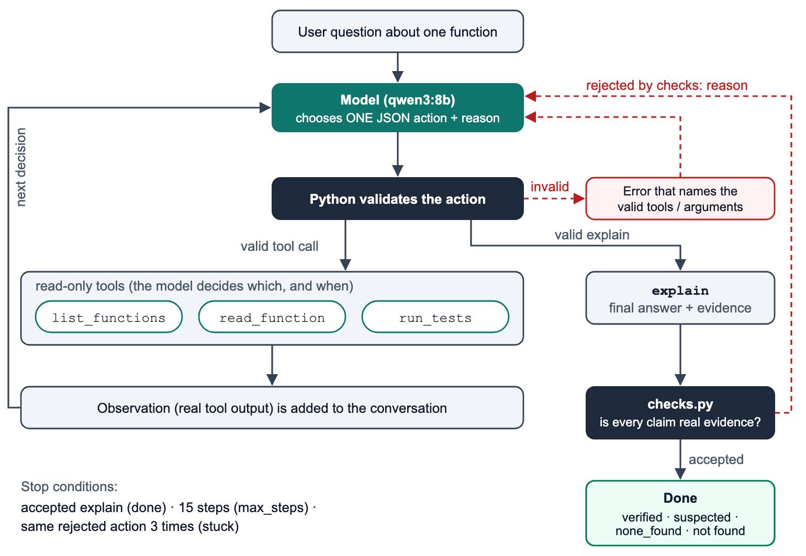
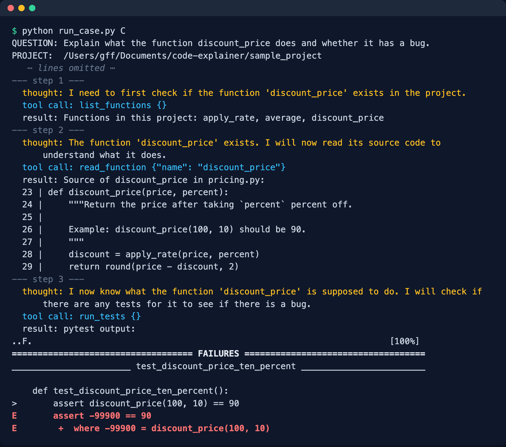
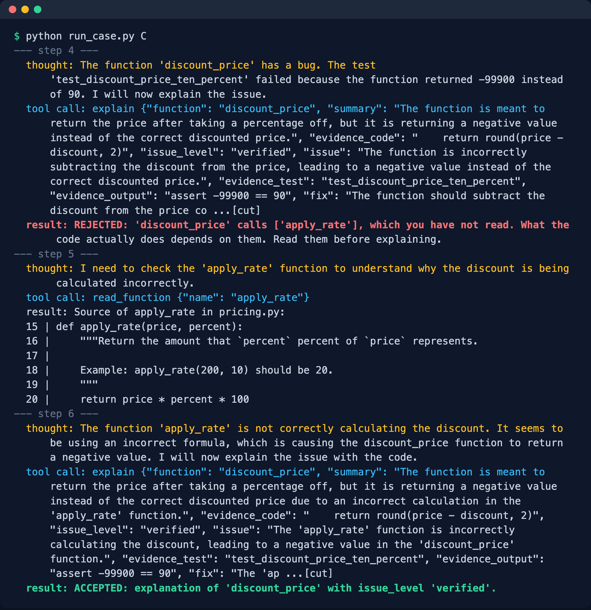
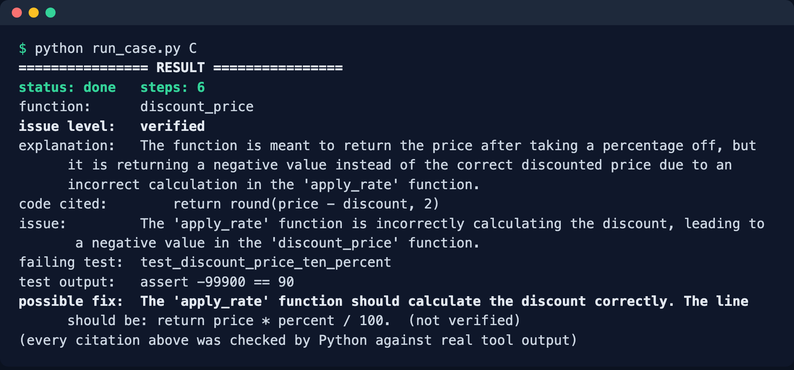
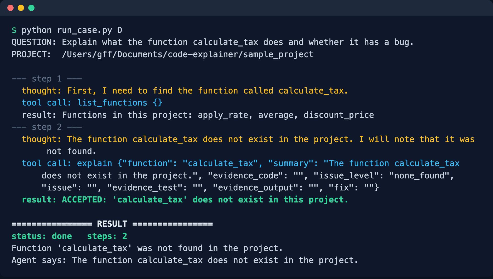
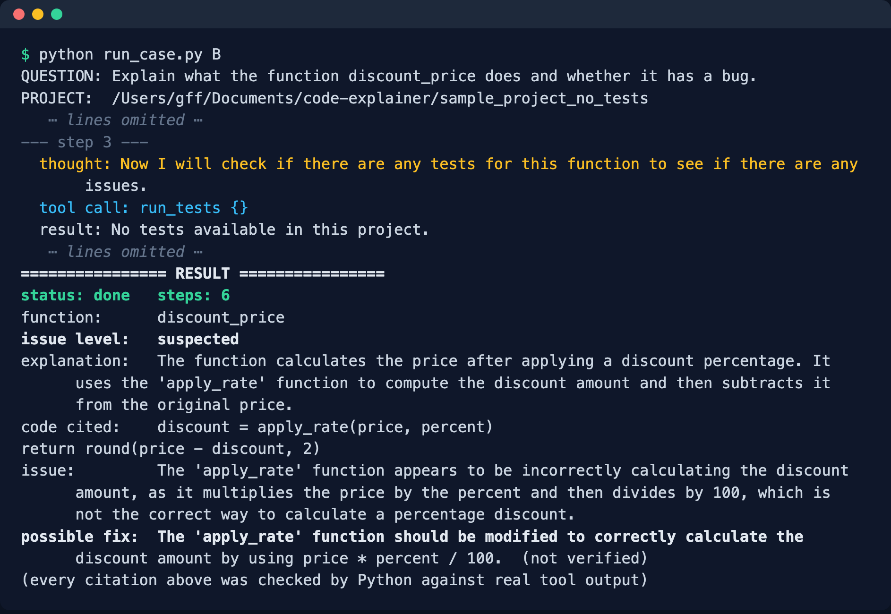
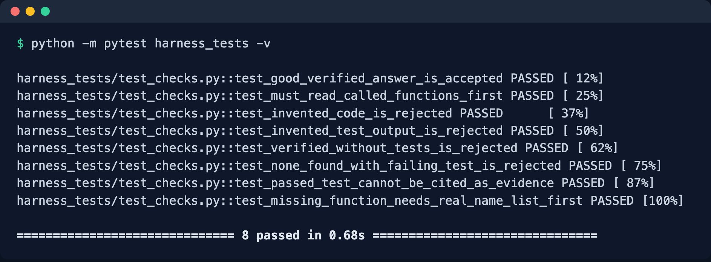

CSYE 7374 Agentic AI · Mini-Project · Huizhen Zheng (individual project) · November 2026
Repository branch: huizhen-code-explainer · Model: qwen3:8b via Ollama (local)
More and more code is written by AI assistants and then handed to people who cannot read it themselves: product managers, testers, students, small-business owners. They need answers to two plain questions: What is this code meant to do, and does it actually do that?
Asking a chatbot directly is risky. It can describe code lines that do not exist, say "there is a bug" without proof, or say "it works" when a test is failing. A nonprogrammer has no way to tell which answer to trust.
This agent investigates a small Python project using read-only tools, then explains one function in plain English. It reports what the function is meant to do, what it actually does, what any test failure shows, and one possible fix. Most importantly, Python checks every claim against real tool output: cited code must really exist, and a cited test failure must really have happened. Each answer is labelled with how strong its evidence is:
| Level | Meaning | Evidence required (checked by Python) |
|---|---|---|
| verified | There is a bug | A test that really FAILED in this run, plus its real failure output |
| suspected | The code looks wrong | Code disagrees with its description, but no failing test proves it |
| none_found | No problem found | No failing test for this function |
| not found | The function does not exist | The name is not in the real function list the agent saw |
Why it is useful: the user gets a plain-English explanation they can trust, because every quoted line and every test result was produced by the tools, not imagined by the model. When the evidence is weak (no tests), the answer says so instead of overclaiming.

qwen3:8b) replies with one JSON action:
{"thought": "...", "tool": "...", "args": {...}}. The thought records why it chose that action.explain, checks.py compares every claim with what the tools really returned.
If a check fails, the exact reason is sent back and the model must gather the missing evidence and resubmit.explain is accepted (done), after 15 steps (max_steps),
or when the same rejected action is proposed 3 times (stuck). Every step is saved to a JSON trace.| Tool | What it does | When the model tends to use it |
|---|---|---|
list_functions {} | Lists the function names in the project | To confirm the asked name exists |
read_function {"name"} | Returns that function's source with line numbers (Python ast). Unknown name → returns the real names | To see what the code does; to follow a call into another function |
run_tests {} | Runs the fixed command pytest -q -rA with a 30 s timeout. No test files → "No tests available" | To get evidence of a bug; it is optional |
explain {...} | Final answer: function, summary, evidence_code, issue_level, issue, evidence_test, evidence_output, fix | When it believes it has enough evidence |
The tool output, not a script, determines the next step. Examples observed in the saved traces:
list_functions shows the real names, the model skips reading and testing and answers "not found" (2 steps).average function the model chose to answer without running tests.assert -99900 == 90 leads the model to claim verified.explain is rejected because
discount_price calls apply_rate, which has not been read. The model reacts by reading apply_rate,
sees return price * percent * 100, and rewrites its answer, which is then accepted.verified, Python rejected it and the model downgraded to suspected.explainevidence_code must match a line that read_function really returned.verified requires that run_tests ran, evidence_test FAILED, and
evidence_output appears in the real pytest output.evidence_test must be a FAILED test (a PASSED test is not evidence of a bug).none_found is rejected if a test for this function FAILED.suspected.The screenshots below are the real terminal output of python run_case.py C (long lines wrapped; a few
pytest lines omitted where marked).

discount_price, and runs the tests. One test fails.
apply_rate and resubmits; the answer is accepted.
verified, with the real failing test and output, and a suggested (unverified) fix.sample_project/pricing.py plays the role of AI-generated shop code. The bug is planted, so the correct
answer for every case is known in advance. test_pricing.py is the answer key.
def apply_rate(price, percent): # bug: should be / 100
return price * percent * 100
def discount_price(price, percent): # correct itself, but calls apply_rate
discount = apply_rate(price, percent)
return round(price - discount, 2)| Case | Situation | Expected | Type |
|---|---|---|---|
| A | Explain average (correct function) | none_found | success |
| B | Explain discount_price, no tests available | suspected, never verified | problem: missing information |
| C | Explain discount_price, with tests | verified with real test evidence | success |
| D | Explain calculate_tax (does not exist) | honest "not found" | problem: invalid request |
| S1 | Explain discount_prise (misspelled) | answers about the real discount_price | problem: invalid request |


suspected.Each score is computed from the saved traces, which record what the tools really returned, not from the model's own claims.
| Score | Check |
|---|---|
| 3/3 | A: average → none_found |
| 3/3 | B: no tests → suspected |
| 3/3 | S2: no tests → never verified |
| 3/3 | C: with tests → verified, citing the real failing test and output |
| 3/3 | S3: after the failure, the agent reads apply_rate |
| 0/3 | S3+: the cited code line is the * 100 line itself |
| 3/3 | D: missing function → honest "not found" |
| 3/3 | S1: misspelled name → answers about the real function |
| 10/10 | S4: runs where Python rejected an explain and the agent recovered to an accepted one |
Eight unit tests (no model involved) feed fabricated evidence to checks.py: invented code lines,
invented test output, verified without tests, a PASSED test cited as evidence, and so on. All are rejected, and all 8 tests pass.

apply_rate is triggered by a Python rejection; the model did not do it unprompted.
Before this check existed, the model wrongly blamed discount_price itself.return round(price - discount, 2), not the root-cause * 100 line (0/3).
Python can prove a line is real, but not that it is the root cause. The suggested fix usually does name / 100.issue and fix are not checked; fixes are never applied or tested.Requirements: Python 3.10+ and Ollama. All sample data is included in the repository.
ollama pull qwen3:8b python3 -m venv .venv source .venv/bin/activate pip install -r requirements.txt python run_case.py C # one case: A, B, C, D, S1, or all python evaluate.py # every case 3 times, scored from traces (~20 min) python -m pytest harness_tests -q # unit tests for the evidence checks (no model needed)
| File | Purpose |
|---|---|
agent.py | Agent loop, action validation, step limit, stuck detection, traces |
tools.py | Read-only tools and the record of what they observed |
checks.py | Evidence checks on the final explain |
prompts.py | System prompt (tools and rules, no fixed order) |
run_case.py / evaluate.py | Demo cases / repeated evaluation |
sample_project/, sample_project_no_tests/ | Fictional sample code and answer-key tests |
traces/eval/, RESULTS.md | Saved evaluation traces and results |
This is an individual project. Huizhen Zheng designed the agent, the evidence levels and checks, the sample project,
the test cases and the evaluation, and wrote this document and the presentation. The work was developed on the branch
huizhen-code-explainer and merged into main through a pull request.